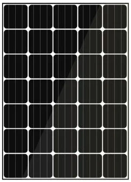

Solar Panels
Solar panels are the stars of the residential solar system, gleaming on the rooftop as they tell the world, or at least the neighborhood, that this homeowner cares enough about the environment to ease the household’s carbon footprint while smartly lowering electric bills. Panels get the glory, but like every star, they wouldn’t be where they are without the supporting cast. In this case, that supporting cast is the critical infrastructure made up of inverters, racking and monitoring systems. These essential parts of your solar power system help make the power useable, connect your system to the roof and let you know how well your system is functioning.

Inverters
Solar Inverters: From DC to AC Power If not for inverters, solar panels would be relatively useless for homeowners. Once the solar panels have collected sunlight and changed it into DC power, an inverter is needed to convert that electricity into something more useable, notably AC power. Here’s why that matters: DC (direct current) power is low voltage and flows in a single direction. AC (alternating current) power moves both forward and backward along a wire, can change between high and low voltage and can more easily be sent long distances over wires. Solar panels make DC power. Most U.S. homes and businesses run on AC power. Thus, the inverter – or inverters, depending on what a homeowner chooses for his solar system.

Mounting
Solar Mounting Systems: Maximizing Energy Production No matter the weather, your solar panels need to stay solidly on your roof. That’s where the solar panel mounting system comes in.

Monitoring
Monitoring Your Solar Panels Performance Solar panels silently go about their business of gathering sunlight and producing energy, which makes it hard to tell how effectively they are working. If a panel on your string inverter gets shaded, the entire string will be affected and won’t produce the energy you were expecting. Unless you want to wait until your utility bill gives you the bad news, a monitoring system can be invaluable. Monitoring systems help you to measure and track how much electricity your system is producing and identify and promptly fix any performance issues so that you are maximizing the production of electricity from your solar system.